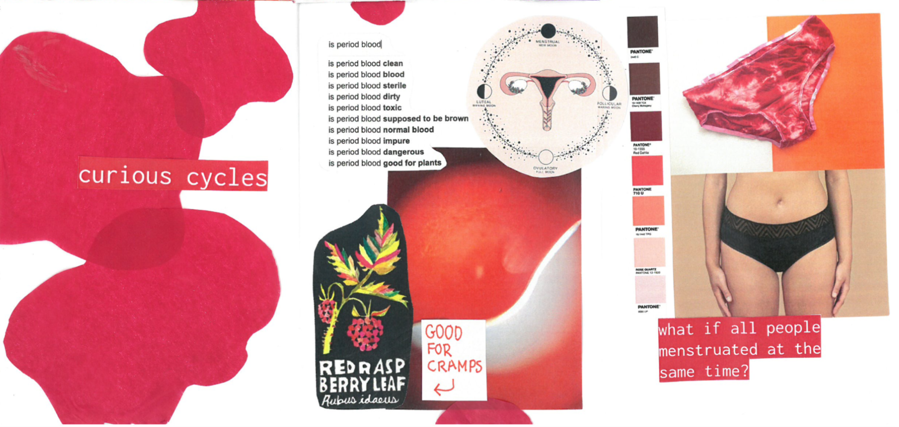

Hi!
I'm Nadia, a master's student in Interactive Media Technology at KTH, Stockholm, Sweden.
I'm currently doing my master's thesis on designing menstrual technologies, and I've created a set of cultural probes to prompt people to reflect and speculate about the role of technology in menstrual cycles. These probes are a set of objects and activities to complete during the length of a menstrual cycle, around a month.
I'm looking for people who:
- Menstruate and have menstrual cycles.
- Are NOT on hormonal contraceptives or birth control.
- Are willing to reflect on intimate questions surrounding menstrual cycles.
- Are willing to explore their body and their cycles, including looking at and touching their menstrual blood, cervical mucus and saliva.
- Are OK with sharing this information with me.
- Are OK with having this information included anonymously in my paper, which will be available online.
You can keep the objects at the end of the study if you'd like. You can back out at any moment and you are not obligated to complete all activities.
I'm suuuuuuper excited to see and hear what you think! I'll start with a short interview when I give you the kit on week 15. We'll meet again for another interview at the end of the study on week 20 or 21.
If you're interested please mail me at nadiacw@kth.se or message me on social media.
